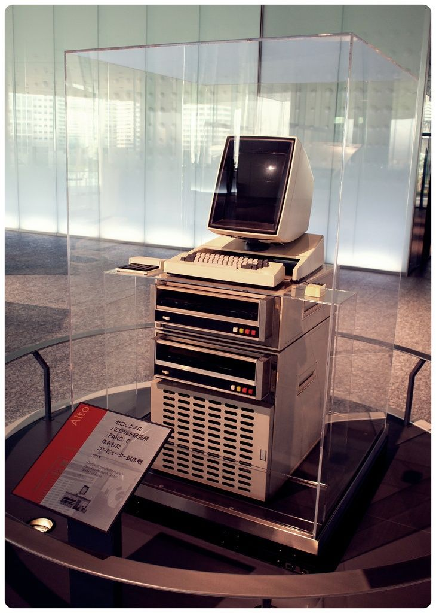
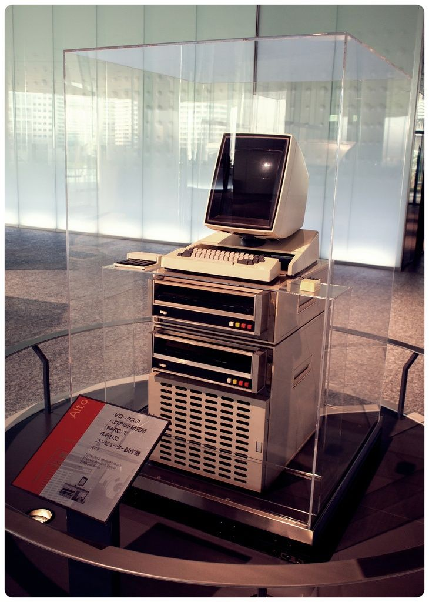
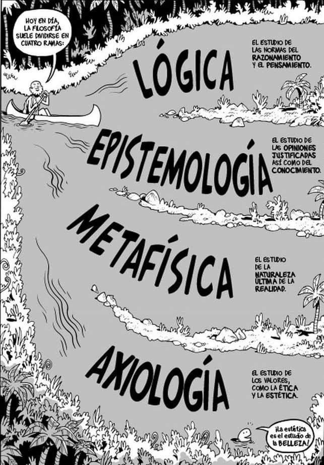
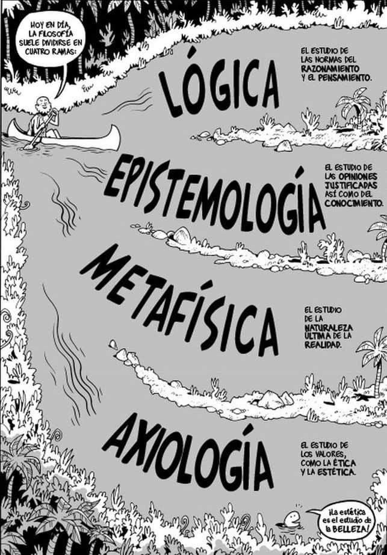

1er Parcial
SISTEMA OPERATIVO
Concepto de sistema operativo
Un sistema operativo (S.O.) es un conjunto de programas que permite la administración eficaz de las
capacidades y recursos de una computadora. Es el programa (software) más importante de una computadora.
Para que funcionen otros programas, cada computadora de uso general debe tener uno. Los sistemas operativos
realizan tareas básicas, tales como reconocer la entrada de datos desde el teclado, enviar la salida de datos
a la pantalla, mantener un control de los archivos y directorios en disco, y controlar dispositivos
periféricos como impresoras, unidades de disco, etc.
Evolución
1950-1960: Monitor residente. Los primeros S.O. se desarrollaron a finales de los años 50, para gestionar
sistemas de procesamiento por lotes. Los sistemas de esta época eran muy primitivos, y su principal función
era transferir el control de una secuencia de trabajos (jobs) a otra. A principios de los 60, se desarrollaron
los sistemas de multiprogramación, permitiendo que varios trabajos residieran en la memoria al mismo tiempo,
aumentando la utilización del CPU.
Componentes principales de un S.O.
El sistema operativo se divide en dos partes: el núcleo (o kernel) y el intérprete de comandos (o shell).
El kernel es la parte central del sistema operativo, responsable de la gestión de los recursos del sistema,
incluyendo la memoria, el procesador y los dispositivos de entrada/salida. El shell es la interfaz que
permite a los usuarios interactuar con el sistema operativo, ya sea a través de comandos de texto o de una
interfaz gráfica de usuario (GUI).
Funciones principales del S.O.
El sistema operativo tiene varias funciones importantes, entre las cuales destacan:
- Gestión de procesos: el S.O. administra la ejecución de los procesos, asignándoles tiempo de CPU y recursos necesarios.
- Gestión de memoria: el S.O. controla la asignación y liberación de la memoria, asegurando que cada proceso tenga el espacio que necesita.
- Gestión de archivos: el S.O. organiza y controla el acceso a los archivos en los dispositivos de almacenamiento.
- Gestión de dispositivos: el S.O. controla y coordina el uso de los dispositivos de entrada/salida, como impresoras, discos duros, etc.
- Interfaz de usuario: el S.O. proporciona una interfaz para que los usuarios interactúen con el sistema, ya sea a través de comandos de texto o de una GUI.
Tipos de S.O.
Existen varios tipos de sistemas operativos, entre los cuales se encuentran:
- Sistemas operativos de tiempo compartido: permiten que múltiples usuarios utilicen el sistema al mismo tiempo, compartiendo el tiempo de CPU.
- Sistemas operativos de tiempo real: diseñados para aplicaciones que requieren tiempos de respuesta muy rápidos.
- Sistemas operativos de red: permiten la gestión de recursos y la comunicación entre computadoras en una red.
- Sistemas operativos distribuidos: gestionan un conjunto de computadoras independientes, haciendo que parezcan un único sistema.
Ejemplos de S.O.
Algunos ejemplos de sistemas operativos son:
- Windows
- Linux
- MacOS
- Unix
- Android
- iOS
Importancia del S.O.
El sistema operativo es crucial para el funcionamiento de una computadora, ya que actúa como intermediario
entre el usuario y el hardware, facilitando el uso y la gestión de los recursos del sistema de manera
eficiente y segura.
Historia de los S.O.
Los primeros sistemas operativos nacieron a principios de los años 50 y han evolucionado significativamente
desde entonces. En sus inicios, los S.O. eran muy simples y estaban diseñados para gestionar tareas básicas.
Con el tiempo, se han vuelto más complejos y potentes, permitiendo la ejecución de múltiples tareas
simultáneamente y proporcionando interfaces de usuario más amigables y sofisticadas.
¿Qué es el Kernel?
El núcleo o kernel es el corazón del sistema operativo. Es responsable de la gestión de los recursos del
sistema, incluyendo la memoria, el procesador y los dispositivos de entrada/salida. El kernel se ejecuta en
modo supervisor y proporciona los servicios básicos necesarios para el funcionamiento del sistema operativo
y de las aplicaciones.


.jpeg)
 



 
